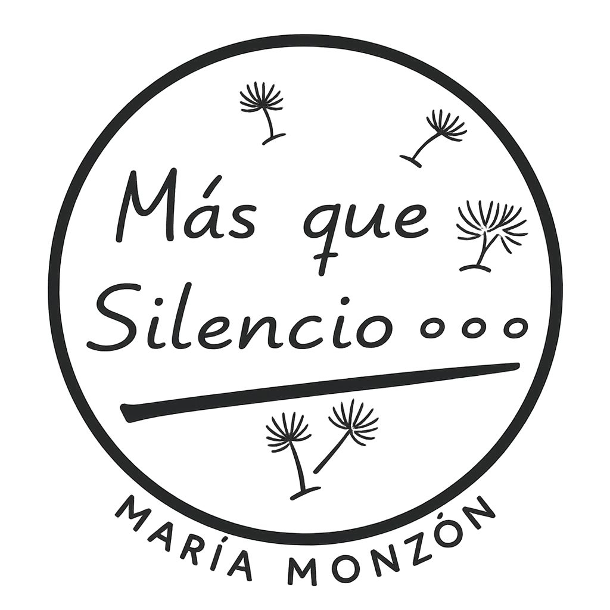

Respirar, sentir y disfrutar el momento
Este es un espacio creado para acompañarte en tu propio camino hacia la calma, el bienestar emocional y la conexión con el momento presente. Cada persona vive el mindfulness a su manera, y aquí encontrarás herramientas sencillas, accesibles y prácticas que te ayudarán a incorporar pequeños momentos de serenidad en tu día a día.
Ejercicios simples para volver al presente y calmar la mente.
Prácticas para soltar tensión, equilibrar la mente y conectar contigo.
Pequeños hábitos para cultivar una vida más tranquila y consciente.
“La calma llega cuando dejas de luchar contra el momento presente.”
El mindfulness, o atención plena, es la capacidad de estar presente con amabilidad, sin juzgar y sin prisas. Consiste en aprender a observar nuestros pensamientos, emociones y sensaciones desde la calma, permitiéndonos vivir con mayor claridad y equilibrio.
A través de prácticas sencillas — como la respiración, la meditación, el movimiento consciente y la observación— podemos entrenar nuestra mente para responder con serenidad en lugar de reaccionar automáticamente al estrés.
Meditaciones, ejercicios y prácticas para usar en cualquier momento del día.
Actividades divertidas y educativas para que los más pequeños aprendan a gestionar emociones, mejorar la atención y cultivar calma.
Espacios personales o grupales para iniciar un camino hacia el bienestar emocional.
No necesitas experiencia previa para comenzar. Solo necesitas un momento, una respiración profunda y la disposición de cuidarte. Aquí encontrarás un lugar para eso: un espacio amable, cercano y pensado para acompañarte paso a paso.
Para personas que buscan un momento de pausa en su día, aprender a respirar mejor, gestionar emociones, mejorar la atención o simplemente reconectar consigo mismas.
Herramientas suaves para calmar la mente y el cuerpo.
Prácticas para fortalecer el vínculo y la conexión.
Mindfulness a través del juego, el movimiento y la creatividad.
Mejora tu concentración y toma de decisiones.
Aprende a responder en lugar de reaccionar.
Mayor equilibrio, calma y conexión contigo.
Da el primer paso hacia una vida más consciente y equilibrada.
Contactar conmigo